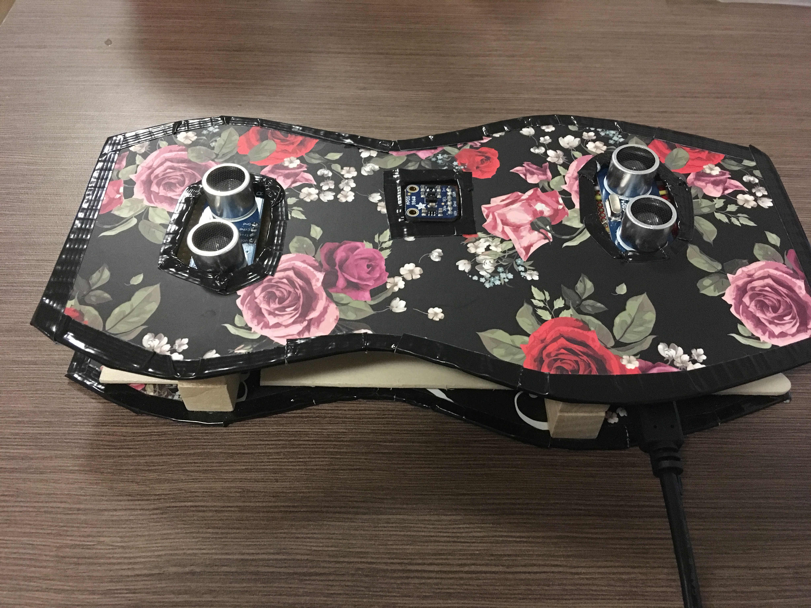
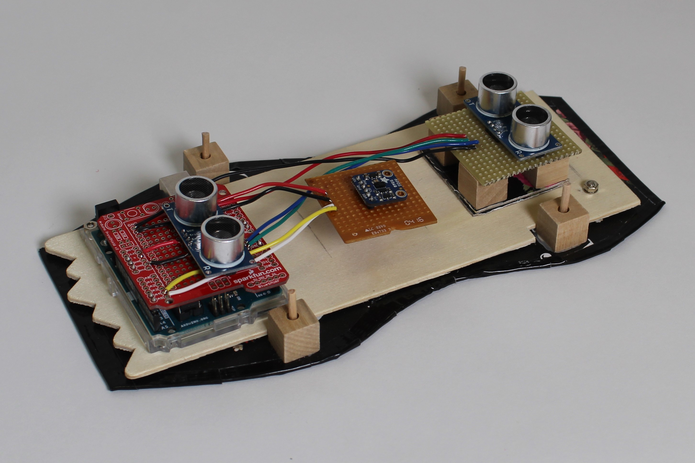

zither sin string
zither sin string is an electronic instrument driven by gestures. It uses two ultrasonic distance sensors and an Adafruit APDS9960 breakout board, used for gesture tracking. The gestures left, right, up, and down are used to control the output of single notes or chords, while the distances between the performer's hands and the instrument control pitch. I designed a Karplus Strong-based synthesis engine in Max to play notes, but the instrument can also be used as a MIDI controller.
The following videos document two different performances with zither sin string. untitled showcases the instruments ability to create complex timbres, while Emerald presents it in a collaborative context. Emerald was composed collaboratively by myself and three others in response to a task to create a cohesive piece by programming novel controllers. This is a rehearsal video of the outcome of the exercise.
Key times in the videos:
untitled for zither sin string: 0:00 - 0:47, 1:24 - 2:03
Emerald: 0:25 - 1:40
This instrument was the origin point in my interest in using digital instruments as tools of communication. The act of turning beams of infrared light and ultrasonic soundwaves into sound creates a visual of playing the air. The explorations that followed this, beginning with surrounding sound began from the questions "what is the sound of air?" and "how can you play the air?"
surrounding sound
When I started creating surrounding sound, I hoped that it would allow me to understand how different parameters, like humidity and barometric pressure, influence weather. I quickly realized that I wouldn't be able to match the sounds to the weather and maintain the natural interactions between forces. I could learn to recognize any one component in isolation, but together I could not. This turned out to be a success of the project. I realized I needed to move away from data sonification, and towards creating interactions with the natural features that I want to understand.


surrounding sound is programmed in Supercollider and Arduino using two microcontrollers. It does not need to be connected to a computer to be used, as it is meant to be taken outdoors to listen to environments. It has been shown in both performance and installation, paired with generative audiovisual projections that present the locations it recorded. The performance visual, an excerpt of which is on the right, distorts images and videos of these locations according to the volume of sound from the performer, the instrument, and a field recording of the ambient noise from one site. The installation visual uses a 3-dimensional space to take viewers to the different sites and their sounds. The sound of any particular site is loudest at the center of its image cube, and silent once the camera is too far from it.
Creating mutual understanding begins with communication. surrounding sound seeks to facilitate a conversation with the weather. In the next few months, it will be succeeded by its younger sibling, pocket sound, an instrument that carries the same conversation using acoustic sound rather than electronic sound.
earth and touch
After making surrounding sound, I wanted to find a way to communicate with more of these parts of landscapes that do not make sound. Rather than separate ourselves from plants, I sought common ground. Both human hands and plant soil can be interpreted using capacative touch sensing. Electricity is conducted by both us and plants. earth and touch starts a conversation between humans and plants from the shared conductivity. The conversation is not in human language or plant language. Instead, it is mediated by the machine, in an unfamiliar language to both of us. This creates a level playing field to begin to communicate together.
To create the instrument, I connected several analog inputs to a Teensy microcontroller. The Teensy is attached to the Teensy Audio Shield, a lovely board that allows it to make music. The company that makes these also has a library for creating audio synthesis systems in Arduino that works with an online interface, the PJRC Audio System Design Tool. Using these, I was able to create a complex network of sound creation. All inputs for human touch and plant soil interact with one another. When one wire is touched, it changes multiple parts of the system rather than just one. The result is a device where plants and I can talk to one another, and plants can talk to each other as well.
untitled arctic poem

untitled arctic poem is the culmination of a semester of learning how to convey pressing issues in ecological sciences to the general public. After spending much of the semester learning in the context of illustration, I decided to turn to audiovisual narrative to discuss the future of Arctic herbivores. In researching this topic, I arrived at a literature review that identified trends in herbivory driven by warming seasons, migration of plant life northward, and increasing incidence of trophic mismatch -- a phenomenon that occurs when species whose seasonal phases are interconnected change the timing of their behaviors and become out of sync. I now knew that herbivores in the Arctic were intrinsically connected to climate change, but with so many interactions present in Arctic biome, the task to communicate them was daunting. To address Arctic herbivory, I accepted the complexity of the issue, and began a poetic exploration.
The inital Western expeditions in the Arctic were often violent and disturbing, and are emblematic of a colonial ideology of manifest destiny. Continued oil drilling in the region is a factor in both global temperature increase and habitat loss. I presented public domain footage from early expeditions, showing the pollution already beginning in the form of ships, alongside ice melt data visualizations and key herbivore species. The audio in the piece combined haunting sounds of sea ice melt with boreal forest noise and animal calls, randomly changing the levels of each sound source gradually in the installation. It was played through a ceiling-mounted dome speaker, so that visitors could only hear the content when standing in below it, taking in the poem. The piece was installed at Boston Cyberarts in January 2020. The following is a short recording of the program that generated the audiovisual landscape.